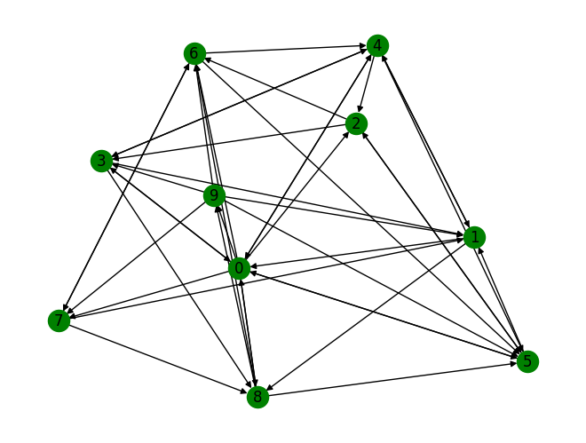

8. Random walks#
import networkx as nx
import random
import matplotlib.pyplot as plt
import operator
import numpy as np
from tqdm import tqdm
8.1. Pagerank#
# select random graph using gnp_random_graph() function of networkx
Graph = nx.gnp_random_graph(10, 0.5, directed=True)
nx.draw(Graph, with_labels=True, node_color="green") # draw the network graph
plt.figure(figsize=(15, 10))
plt.show() # to show the graph by plotting it

<Figure size 1500x1000 with 0 Axes>
Graph.nodes
NodeView((0, 1, 2, 3, 4, 5, 6, 7, 8, 9))
dict_counter[0]
1541
# random_node is the start node selected randomly
random_node = random.choice([i for i in range(Graph.number_of_nodes())])
dict_counter = {} # initialise the value for all nodes as 0
for i in range(Graph.number_of_nodes()):
dict_counter[i] = 0
# increment by traversing through all neighbors nodes
dict_counter[random_node] = dict_counter[random_node] + 1
# Traversing through the neighbors of start node
for i in range(10000):
list_for_nodes = list(Graph.neighbors(random_node))
if len(list_for_nodes) == 0: # if random_node having no outgoing edges
random_node = random.choice([i for i in range(Graph.number_of_nodes())])
dict_counter[random_node] = dict_counter[random_node] + 1
else:
random_node = random.choice(
list_for_nodes
) # choose a node randomly from neighbors
dict_counter[random_node] = dict_counter[random_node] + 1
# using pagerank() method to provide ranks for the nodes
rank_node = nx.pagerank(Graph)
# sorting the values of rank and random walk of respective nodes
sorted_rank = sorted(rank_node.items(), key=operator.itemgetter(1))
sorted_random_walk = sorted(dict_counter.items(), key=operator.itemgetter(1))
sorted_rank
[(9, 0.05163655669032473),
(7, 0.06866062513534357),
(3, 0.08249169617472),
(2, 0.08690367458497548),
(8, 0.1005198547573464),
(6, 0.10449170872598244),
(4, 0.11067186915445734),
(1, 0.11738905824670028),
(5, 0.13345779932175328),
(0, 0.14377715720839634)]
sorted_random_walk
[(9, 441),
(7, 585),
(3, 797),
(2, 885),
(8, 1004),
(6, 1006),
(4, 1171),
(1, 1205),
(5, 1395),
(0, 1512)]
from scipy.stats import spearmanr
spearmanr([x[0] for x in sorted_rank], [x[0] for x in sorted_random_walk])
SpearmanrResult(correlation=0.9999999999999999, pvalue=6.646897422032013e-64)
8.1.1. prediction of pagerank#
def predicted_rank(in_degrees, q=0.85):
av = np.mean(in_degrees)
N = len(in_degrees)
return q / N + ((1 - q) / N) * (np.array(in_degrees) / av)
8.1.2. ER graph#
nx.gnm_random_graph(10, directed=True)
G = nx.DiGraph(nx.erdos_renyi_graph(200, 0.1))
q = 0.85
pr = nx.pagerank(G, alpha=1 - q)
in_degrees = [G.in_degree(x) for x in pr]
out_degrees = [G.out_degree(x) for x in pr]
fig = plt.figure(figsize=(12, 8))
plt.scatter(in_degrees, pr.values(), c=out_degrees, marker=".")
plt.colorbar(label="out degree")
plt.xscale("log")
plt.yscale("log")
plt.plot(sorted(in_degrees), predicted_rank(sorted(in_degrees), q), "k-")
plt.xlabel("in degree")
plt.ylabel("PageRank")
Text(0, 0.5, 'PageRank')
8.1.3. real world graph#
# filepath = "./../datasets/USairport_2010.txt"
filepath = "./../datasets/cit-HepTh.txt"
G = nx.DiGraph()
fh = open(filepath, "r")
for line in fh.readlines():
s = line.strip().split()
if s[0] != "#":
origin = int(s[0])
dest = int(s[1])
G.add_edge(origin, dest)
fh.close()
GCC = G.subgraph(list(nx.weakly_connected_components(G))[0])
GCC.number_of_nodes()
27400
ranks = nx.pagerank(GCC, alpha=1 - q)
ranks
{1001: 3.2602499246893044e-05,
9304045: 4.071306164225111e-05,
9308122: 6.479306620003078e-05,
9309097: 8.698076219806325e-05,
9311042: 4.5027491416976204e-05,
9401139: 0.0002062551248078757,
9404151: 5.263194784399839e-05,
9407087: 0.000657918655059675,
9408099: 0.000435401415075891,
9501030: 7.183653532234046e-05,
9503124: 0.0003809559588067761,
9504090: 0.00013857143647131768,
9504145: 8.315079544067203e-05,
9505025: 4.028424998714547e-05,
9505054: 4.735170114694794e-05,
9505105: 0.0001002915296066482,
9505162: 7.5393056368472e-05,
9506048: 4.515780210886138e-05,
9506112: 6.813057106676225e-05,
9506144: 5.227848260853375e-05,
9507050: 7.362582036791592e-05,
9507158: 0.00012099234013801616,
9508094: 4.9926041251757153e-05,
9508155: 6.809694853171543e-05,
9510142: 4.017626740799703e-05,
9510225: 7.76787039787459e-05,
9510234: 4.6642662505665174e-05,
9511030: 0.0001161820133031774,
9511171: 4.007831301786174e-05,
9601108: 4.9613164206003e-05,
9602022: 0.00016308837295732917,
9602114: 8.496961752560241e-05,
9603003: 7.573627848221192e-05,
9603150: 6.850686621787474e-05,
9603161: 8.997520303219774e-05,
9603167: 0.00013817270934315132,
9605184: 6.430931171528395e-05,
9605222: 3.722800499715411e-05,
9606017: 6.037863337033408e-05,
9606040: 6.161273749216551e-05,
9607163: 8.646986953640306e-05,
9607207: 6.402636901070692e-05,
9608086: 3.769839556950575e-05,
9609070: 4.7384518506636504e-05,
9609071: 4.474463479306141e-05,
9609239: 5.583538023071617e-05,
9611137: 5.8004717963157726e-05,
9612108: 4.0014512425059836e-05,
9701162: 6.0745752676542493e-05,
9702094: 5.054980277707597e-05,
9702155: 5.4570968627785315e-05,
9702198: 4.298288347070795e-05,
9703082: 4.507302473829063e-05,
9703166: 0.0001180071409930563,
9704097: 3.766475523693807e-05,
9705030: 4.326737606459631e-05,
9705044: 4.265027741926577e-05,
9705104: 4.5811819449376484e-05,
9705220: 3.743412495391929e-05,
9706005: 3.350317267634104e-05,
9707014: 3.438676640625028e-05,
9707042: 3.97050060074358e-05,
9707049: 3.717432303455635e-05,
9710230: 6.11455168493815e-05,
9711036: 3.4240150010454285e-05,
9711104: 3.507304916375624e-05,
9712028: 7.002770453495068e-05,
9712042: 3.42603591530865e-05,
9802194: 3.6473807280330665e-05,
9805056: 3.447480017288377e-05,
9805206: 3.3721846131536755e-05,
9806094: 3.5689881864827016e-05,
9810188: 0.00011350943395669165,
9811217: 3.5595577106267174e-05,
9905036: 3.501804099747471e-05,
9907041: 3.357834509793832e-05,
9908007: 3.496571360568869e-05,
9908144: 4.2849426977707676e-05,
9909108: 3.98878454041099e-05,
9909120: 3.969259124373852e-05,
9909229: 3.488755119473096e-05,
9910238: 3.341063239536191e-05,
9910248: 3.255387766035767e-05,
9910268: 3.2447682873858855e-05,
9204040: 4.616999515955385e-05,
9203084: 5.674302314580726e-05,
9204035: 6.413167025992615e-05,
9205041: 5.464839540107384e-05,
9207049: 3.9207326426503814e-05,
9207111: 4.105598708358358e-05,
9301042: 0.00018691239155548472,
9301043: 8.233060567247599e-05,
9201015: 6.45765997733874e-05,
9201040: 6.96376026940127e-05,
9201047: 3.859713775744476e-05,
9202046: 0.00011812538871736851,
9202059: 5.830778501617569e-05,
9202092: 8.476606268822707e-05,
9203008: 3.8938665711620004e-05,
9203031: 3.8251914719732607e-05,
9204037: 3.4574313932970444e-05,
9204046: 8.011395126897522e-05,
9205046: 6.711913242114635e-05,
9205060: 3.2968083378045116e-05,
9205062: 4.388600239953454e-05,
9205068: 0.0002507633624459461,
9206023: 3.6417122966609985e-05,
9206051: 4.8046504583369574e-05,
9206078: 7.110482172652614e-05,
9207016: 0.00012733108701231164,
9208076: 3.9816979566402154e-05,
9209052: 5.627184048923563e-05,
9210015: 4.667930782247373e-05,
9210021: 0.0001002957284581732,
9210121: 5.334568225855176e-05,
9211021: 0.00013474099032175584,
9211041: 3.666221242196717e-05,
9212089: 3.334958173888217e-05,
9301005: 3.626913094057395e-05,
9302033: 7.063954526018547e-05,
9302069: 3.564284510385992e-05,
9302126: 9.035188549664208e-05,
9303032: 3.676101186913829e-05,
9304155: 3.8273023989446705e-05,
9305185: 9.973722914452983e-05,
9308042: 3.7207101034227e-05,
9305139: 6.060629188598678e-05,
9309140: 9.176829413545297e-05,
9204102: 9.669701303514938e-05,
9211097: 8.430411540368639e-05,
9402002: 0.00017200566001889547,
9402005: 7.305783317894759e-05,
9402044: 0.00019428050617852094,
9403195: 9.28169395154302e-05,
9403198: 0.00010457218863547841,
9406128: 5.389817140563775e-05,
9205081: 8.07784156644802e-05,
9207053: 8.089983685768748e-05,
9208055: 6.737181273718996e-05,
9209016: 6.273299096246157e-05,
9211056: 6.606099624912443e-05,
9303057: 5.602812272209033e-05,
9305142: 5.967067861374172e-05,
9306052: 6.972567292170496e-05,
9306125: 3.419494350987383e-05,
9311120: 5.3524330602837517e-05,
9402032: 0.00014367559900607048,
9406105: 5.763008520903384e-05,
9406198: 4.15606576693375e-05,
9407021: 3.487684518751575e-05,
9407111: 5.365725553045676e-05,
9408040: 4.112054897874756e-05,
9408074: 0.00014518309971740535,
9408083: 6.534197679988518e-05,
9409021: 5.889140238162978e-05,
9410167: 0.00025317058292143306,
9410210: 3.245798763877829e-05,
9412184: 0.00019003164586420517,
9205027: 0.00014480156534656753,
9406012: 4.197775252178358e-05,
9411149: 0.00020174969209629361,
9411178: 5.086756967554843e-05,
9201059: 9.040293775485595e-05,
9309152: 3.707543084820519e-05,
9310067: 3.604826806796131e-05,
9412115: 3.343593156376933e-05,
9501068: 0.00014496578667303443,
9502072: 8.103416776557397e-05,
9504027: 7.119565625198763e-05,
9504047: 8.486913266371059e-05,
9304154: 0.0001420242598774016,
9501022: 4.4585122326363266e-05,
9502057: 4.188573475306877e-05,
9503179: 7.573332840982755e-05,
9308083: 6.809801018194223e-05,
9411048: 0.00011802739520778531,
9411057: 0.00010553183831590778,
9501111: 3.7824449431721964e-05,
9502077: 4.8106179471715196e-05,
9503163: 7.113469750781244e-05,
9504006: 7.456933140358978e-05,
9504034: 5.542076148443348e-05,
9505023: 4.29577643978692e-05,
9505053: 8.17736531662255e-05,
9505062: 7.829395082130192e-05,
9302103: 8.665321944070493e-05,
9305069: 4.3337361569125384e-05,
9406032: 3.699858786572521e-05,
9409188: 5.2329109639947464e-05,
9406055: 5.197512851049832e-05,
9408036: 5.575490935214403e-05,
9411234: 4.3178789105974464e-05,
9412200: 3.797608910294868e-05,
9506075: 3.936870163165323e-05,
9506091: 3.776083598708869e-05,
9506024: 3.4747649467102654e-05,
9506077: 5.455347274063504e-05,
9506110: 4.942441836485989e-05,
9506160: 6.015110047551846e-05,
9506194: 6.464593301975209e-05,
9507027: 4.22819938806695e-05,
9207060: 6.333589768465925e-05,
9503212: 4.708814380901866e-05,
9506126: 8.657530753097348e-05,
9506150: 4.8711002349850154e-05,
9507048: 7.91472719673411e-05,
9303106: 3.2558405952614415e-05,
9410073: 8.533291188920399e-05,
9411187: 6.469218293442048e-05,
9504081: 9.052319103593933e-05,
9504095: 4.4982591880122344e-05,
9506057: 4.389990863450227e-05,
9507090: 6.492181173425543e-05,
9508056: 3.2714138987655083e-05,
9304135: 4.443142771061796e-05,
9412209: 4.2029196506763824e-05,
9505073: 6.004468655441689e-05,
9505150: 7.077485139873566e-05,
9506084: 3.814210179438537e-05,
9506102: 7.216118054623693e-05,
9507113: 3.899099679592573e-05,
9507115: 5.139424511800246e-05,
9507121: 0.00011092015606332382,
9507151: 3.817772416668861e-05,
9507153: 3.609686318012628e-05,
9507168: 3.845999968375341e-05,
9508044: 3.273503322485601e-05,
9508064: 4.351082695777849e-05,
9508071: 3.735398752186731e-05,
9508096: 3.1925306612137044e-05,
9508143: 0.00013031102953390815,
9508144: 3.743792849355875e-05,
9409110: 3.857866372672934e-05,
9503208: 3.4611592670689406e-05,
9507012: 6.353923351230212e-05,
9508154: 6.178898500593902e-05,
9509009: 3.752273335920484e-05,
9510093: 4.226083245458504e-05,
9201056: 0.0001760100571783792,
9206080: 3.4789630281134144e-05,
9301083: 5.166872307301751e-05,
9307158: 5.3824855124609365e-05,
9308062: 3.324435429145554e-05,
9407031: 8.571675395095105e-05,
9506122: 4.4345398136395864e-05,
9509066: 0.00013260619260263158,
9510135: 0.00026461811238430915,
9510169: 0.0001342240511648053,
9204030: 6.583209531065423e-05,
9205009: 5.2803436604415e-05,
9510017: 0.0004029149662752657,
9510173: 4.406411712289736e-05,
9510182: 8.035517353481484e-05,
9412236: 5.2812932122909656e-05,
9511164: 6.073801745523166e-05,
9511222: 0.00010678699943244122,
9512016: 3.5430444734134954e-05,
9512017: 3.397524577908607e-05,
9512059: 0.00011636658513654782,
9512145: 3.911391336820646e-05,
9601014: 4.0412689948737606e-05,
9601038: 0.0001075598963964827,
9206101: 3.9631047604624616e-05,
9409111: 6.641633526784061e-05,
9505183: 4.493511848866699e-05,
9506101: 5.402489217897715e-05,
9510086: 9.645825310936763e-05,
9510161: 7.810961938278568e-05,
9510209: 0.0002740406070460393,
9511080: 6.39173535337445e-05,
9512077: 0.00012160816409595138,
9512181: 5.719703497479072e-05,
9512196: 5.3770273625945336e-05,
9512219: 8.134832831093459e-05,
9601036: 6.140005950728017e-05,
9602010: 4.118449447145758e-05,
9210127: 7.108556846016292e-05,
9304104: 4.2736999127762965e-05,
9506156: 3.84555738104841e-05,
9508107: 3.8025200525874865e-05,
9509106: 3.728606518015493e-05,
9512129: 3.9094128315940544e-05,
9512178: 3.852660961472316e-05,
9602049: 7.472970506363676e-05,
9602064: 8.595524035660634e-05,
9602097: 3.893483402546229e-05,
9602118: 3.778215133245248e-05,
9512053: 4.8334336438208607e-05,
9602030: 4.9906085650911974e-05,
9602070: 0.00012176535581329592,
9602098: 3.266154075928229e-05,
9602120: 5.9762786131003666e-05,
9404060: 3.4358635342828856e-05,
9511108: 4.762186373405857e-05,
9511157: 3.845964065472208e-05,
9602102: 4.0288176659599585e-05,
9603037: 4.9285132851835734e-05,
9511204: 3.700324394425885e-05,
9512078: 5.678577809235497e-05,
9509151: 5.491177673541792e-05,
9511026: 5.347356504920565e-05,
9511088: 5.132755764464783e-05,
9601029: 0.0002093335479703299,
9601162: 3.7965005963157465e-05,
9602052: 0.00015340323039475854,
9603142: 0.00017046177599824782,
9309110: 5.453728741100115e-05,
9403054: 3.5273971072842986e-05,
9406090: 4.080232863555191e-05,
9412117: 3.773908692993837e-05,
9502012: 3.642581675109451e-05,
9510055: 3.5377927736986934e-05,
9605036: 3.627457682892038e-05,
9603081: 7.474906646608609e-05,
9603127: 7.869089154033341e-05,
9604198: 5.922014272521655e-05,
9605150: 7.843363371633636e-05,
9605199: 6.055361385316679e-05,
9406178: 3.8651582999552314e-05,
9510227: 7.063529558226644e-05,
9512062: 0.0001291039591622848,
9603042: 5.7956362286211764e-05,
9602167: 5.9753400033835425e-05,
9509132: 5.337896319403826e-05,
9608039: 4.316159713789603e-05,
9608079: 4.5230864385249845e-05,
9604097: 4.660036397041347e-05,
9605154: 3.964122540755369e-05,
9608111: 5.833756867441128e-05,
9605131: 4.437325381111243e-05,
9605200: 5.673531293413303e-05,
9606044: 4.4156452370838314e-05,
9606086: 4.295342301385521e-05,
9607020: 3.834180140629664e-05,
9607139: 4.442271285129262e-05,
9608024: 0.0001368802168847366,
9608047: 4.016107681087968e-05,
9608109: 3.855018131971041e-05,
9509042: 3.5012921446366796e-05,
9509161: 7.518158501279763e-05,
9510106: 5.193662808354974e-05,
9602051: 8.079323788373483e-05,
9603108: 3.703146164622333e-05,
9608194: 3.5839279911775704e-05,
9511077: 3.8243714823558465e-05,
9512226: 3.243297387012e-05,
9603170: 4.4035655248047635e-05,
9604034: 7.207859381024162e-05,
9609161: 4.6340671077328805e-05,
9604129: 5.8572019859408884e-05,
9606165: 5.281756418486737e-05,
9610111: 3.5404783915364176e-05,
9602065: 6.444951559137751e-05,
9604030: 6.258615992494536e-05,
9605053: 5.4300135665563004e-05,
9606122: 5.663838472453413e-05,
9606148: 3.6078918712472447e-05,
9607091: 4.051375740281283e-05,
9607105: 3.4088072141459096e-05,
9610195: 3.503634412307157e-05,
9610251: 4.1615782980777274e-05,
9611090: 5.0840125626964216e-05,
9612052: 4.6591500321884564e-05,
9701015: 4.017509968285722e-05,
9701023: 4.085080245381087e-05,
9701147: 3.526634079598593e-05,
9503115: 6.681789037892506e-05,
9505006: 5.921904927305628e-05,
9505075: 8.188062554675938e-05,
9505082: 3.959204093471937e-05,
9505100: 7.587884364176908e-05,
9506098: 5.412217157904772e-05,
9507013: 5.04011361576042e-05,
9507018: 4.293861124681289e-05,
9507032: 4.525119130183051e-05,
9507169: 4.6053966462939735e-05,
9510148: 4.350918415718713e-05,
9510228: 4.0445402687670505e-05,
9511154: 6.263916741337737e-05,
9603086: 5.454006874600913e-05,
9603136: 6.342313321140814e-05,
9603158: 4.7262705731581175e-05,
9607076: 4.1457702948757023e-05,
9607202: 4.9869627996173726e-05,
9610132: 3.180632100805317e-05,
9611190: 4.814666894878283e-05,
9611197: 3.63594542019007e-05,
9612114: 3.805580031301582e-05,
9612207: 4.675738651040773e-05,
9204060: 4.720624873081327e-05,
9205004: 6.14017717322962e-05,
9304026: 5.0936640591943675e-05,
9509049: 3.241329866160052e-05,
9511230: 3.579901757283314e-05,
9606112: 6.814577312608535e-05,
9606008: 3.5099143715462596e-05,
9609219: 4.481457269457475e-05,
9207091: 4.517948145916661e-05,
9210068: 4.513754706536628e-05,
9504102: 6.065552758684663e-05,
9505097: 3.758924171770276e-05,
9507008: 5.588228048567944e-05,
9509175: 6.218925233329742e-05,
9509176: 4.894873469313387e-05,
9510074: 5.054317709085182e-05,
9511180: 3.89893311992092e-05,
9512005: 3.718411596818557e-05,
9512006: 6.198904230922017e-05,
9512139: 3.625657787043204e-05,
9603004: 4.254877319196259e-05,
9604062: 3.43642119582219e-05,
9605032: 5.333749690332532e-05,
9606043: 3.661816076188705e-05,
9606073: 3.2977746259171896e-05,
9607032: 4.004384329536177e-05,
9608183: 3.71336457751667e-05,
9609059: 3.640590936483229e-05,
9611112: 3.29954010180127e-05,
9611188: 3.306720700632132e-05,
9612105: 3.856782726212785e-05,
9505035: 7.775590503873985e-05,
9506011: 6.699704323580191e-05,
9509162: 5.32678854576539e-05,
9510101: 8.30623747490773e-05,
9608085: 4.5186565041136605e-05,
9611230: 0.0001293259379189683,
9612131: 4.461359151875041e-05,
9702014: 6.296829218994064e-05,
9702154: 4.433679410629744e-05,
9509146: 3.499014039740484e-05,
9606133: 3.53682711063871e-05,
9610154: 3.590591732711701e-05,
9701165: 4.799250038186169e-05,
9701175: 3.487438601617853e-05,
9703007: 3.718103728329838e-05,
9703148: 3.32330307936607e-05,
9310035: 4.166072687297684e-05,
9604178: 5.6305484080753595e-05,
9606176: 3.856436977442113e-05,
9607019: 4.190519856684673e-05,
9607057: 4.176871081722856e-05,
9607229: 4.3157756587047746e-05,
9608053: 3.8870023238476456e-05,
9611050: 0.00023051983425624432,
9612126: 5.827294431318197e-05,
9702038: 4.173853861734762e-05,
9605030: 4.591635259465376e-05,
9609159: 3.5628449516458275e-05,
9610140: 5.626361234704361e-05,
9703098: 3.551086223561621e-05,
9703167: 3.5598064423574806e-05,
9609111: 3.40127291867247e-05,
9701129: 3.260555778803599e-05,
9702061: 3.5443530691375724e-05,
9610076: 3.758335958563761e-05,
9611063: 4.583739331144787e-05,
9611201: 3.8904095391555175e-05,
9612085: 3.5834657502124994e-05,
9702180: 4.5955099024282816e-05,
9703100: 4.01127600642896e-05,
9703110: 5.166228953953164e-05,
9703210: 4.839535275989958e-05,
9704043: 4.306146315550785e-05,
9704044: 4.457848146026118e-05,
9704061: 3.548631745688125e-05,
9704104: 4.7545955215067214e-05,
9704170: 4.640761592526074e-05,
9705004: 3.446614811060055e-05,
9609176: 4.302154854873992e-05,
9610043: 0.00042731376981270617,
9705113: 3.453855761236431e-05,
9705175: 3.608028716839384e-05,
9706155: 3.329669286130548e-05,
9506052: 6.908071894345759e-05,
9601003: 7.510756895428257e-05,
9602077: 4.953967090812235e-05,
9702136: 5.4815463523266004e-05,
9704089: 6.153267978357702e-05,
9705162: 5.331900565158923e-05,
9705212: 3.831312158927147e-05,
9706117: 4.457890321605188e-05,
9706144: 3.7683755581540055e-05,
9706207: 4.7369115863604836e-05,
9605033: 7.424007081158893e-05,
9609017: 5.394133168414141e-05,
9610234: 8.067075800323726e-05,
9710206: 5.2593521577174845e-05,
9406091: 4.161087984943668e-05,
9609167: 3.658476781075812e-05,
9611172: 3.398350532568212e-05,
9702199: 3.4057808606438e-05,
9705174: 3.631713675095487e-05,
9705210: 3.403144473564018e-05,
9709178: 3.612724283421118e-05,
9709193: 4.232550099613989e-05,
9710021: 3.433675078523761e-05,
9710031: 3.341382066709258e-05,
9711013: 4.403216137410912e-05,
9611092: 3.5818040215456e-05,
9309124: 3.800987235957482e-05,
9703157: 3.725515960327672e-05,
9707123: 4.509934317871447e-05,
9708118: 4.284140197972281e-05,
9711201: 4.151817647078784e-05,
9512043: 3.594331162623955e-05,
9709180: 4.3596580744744544e-05,
9712023: 3.342285968936937e-05,
9801057: 3.8861053496215574e-05,
9802093: 3.299646168598947e-05,
9711162: 0.00026670855410566293,
9711165: 0.00013898326932287593,
9805189: 3.469980359582388e-05,
9403040: 6.915340878715497e-05,
9511194: 6.5550374931832e-05,
9604091: 7.050153130618787e-05,
9604156: 5.911132087080258e-05,
9612215: 3.876616553998625e-05,
9704006: 4.613408910618774e-05,
9708147: 0.00010021971544275075,
9803194: 5.89020487399333e-05,
9805019: 8.500319677911617e-05,
9805112: 6.935123984786804e-05,
9805170: 9.662145559857805e-05,
9806155: 5.2505701998867497e-05,
9807138: 4.1846763228151e-05,
9807235: 4.703034174938997e-05,
9808141: 8.227533909240919e-05,
9809111: 5.2539731154967774e-05,
9810163: 3.482353152178653e-05,
9402119: 3.982460196987769e-05,
9610162: 4.1844893721741674e-05,
9706110: 5.4040985311484324e-05,
9706226: 3.479552364813059e-05,
9801139: 3.487993472998867e-05,
9802202: 3.653210679593543e-05,
9803224: 3.780897306913843e-05,
9804176: 3.636796024015034e-05,
9807096: 3.3830444477880506e-05,
9602154: 3.313452465571218e-05,
9405012: 3.4781068970887356e-05,
9403096: 3.5083980854643034e-05,
9403187: 4.345748885086819e-05,
9508091: 4.6400698112206874e-05,
9610151: 4.069981905503535e-05,
9706195: 4.236147402485498e-05,
9707013: 3.8013650176836554e-05,
9707044: 4.006914621555687e-05,
9801009: 3.2045201734939296e-05,
9806140: 3.890084970815785e-05,
9812170: 3.2186263939513196e-05,
9901126: 3.52864616539355e-05,
9901137: 3.330511892484194e-05,
9610148: 6.832198573121371e-05,
9610249: 7.256216499408933e-05,
9611159: 7.565604283131524e-05,
9611173: 8.162536770685047e-05,
9612080: 8.225872909186298e-05,
9709027: 8.516859149948707e-05,
9711098: 3.634920823476907e-05,
9711200: 0.0007464178138667795,
9712086: 3.82423793687531e-05,
9812135: 6.457525779832431e-05,
9901042: 3.981473250722467e-05,
9902160: 3.649742123678549e-05,
9903123: 4.351145853453272e-05,
9904207: 8.573829389723633e-05,
9905006: 4.604627756072275e-05,
9905080: 3.261177234768565e-05,
9905195: 3.719329864963666e-05,
9907061: 3.1758294985932304e-05,
9908091: 3.2352185570079246e-05,
9908126: 3.5087179345300144e-05,
9403123: 4.231331522854763e-05,
9605201: 3.910507063563567e-05,
9803205: 4.7889585660431774e-05,
9807040: 3.4422840892047444e-05,
9902098: 5.733852398959115e-05,
9903031: 4.612444856425111e-05,
9904104: 3.528344590480644e-05,
9905032: 3.417001545455192e-05,
9907189: 4.875788474847289e-05,
9907200: 3.8502204313313214e-05,
9908041: 3.84086853269422e-05,
9212115: 4.285298544493184e-05,
9511169: 3.578621098549446e-05,
9810157: 3.912596763229961e-05,
9810064: 3.350346457004504e-05,
9903224: 5.9368226517834056e-05,
9907178: 4.1108954051163754e-05,
9908142: 0.00041516430699004714,
9909101: 3.822394793647757e-05,
9904115: 3.331871100597773e-05,
9910216: 3.177829989776793e-05,
1002: 4.039826904577642e-05,
9201007: 6.402145514820603e-05,
9204031: 4.9152215509978e-05,
9210123: 3.922787852846879e-05,
9304062: 3.87635116826044e-05,
9306005: 3.1949986370558014e-05,
9402089: 3.294914962647846e-05,
9604090: 8.168413523360947e-05,
9803235: 8.517598459182221e-05,
9807051: 3.953321876817464e-05,
9809015: 3.4802577494750035e-05,
9810063: 3.3532965628352625e-05,
9812035: 4.766380776271516e-05,
9902125: 4.224210731567826e-05,
9902155: 4.0646530905219286e-05,
9904017: 7.926655110022842e-05,
9905012: 9.848139849809843e-05,
9905210: 8.24874093842908e-05,
9906064: 0.00043881391518632194,
9906194: 5.687939641250124e-05,
9907070: 3.727362972750782e-05,
9907209: 6.382104005673202e-05,
9908076: 6.988837968054688e-05,
9908116: 4.8312103809411805e-05,
9908186: 4.669816375137796e-05,
9909001: 3.891319043300155e-05,
9909041: 4.3912875002451804e-05,
9909053: 6.341583548255867e-05,
9909058: 5.646745284472136e-05,
9909121: 4.1875329501639604e-05,
9909134: 9.77378419159097e-05,
9910149: 6.954540019794191e-05,
9910219: 9.11327830130865e-05,
9912012: 5.728611377087347e-05,
9912118: 5.7732026741874566e-05,
9912132: 4.135402204385315e-05,
9912187: 3.639672621373585e-05,
9202037: 4.1426598780814915e-05,
9206004: 4.166156393009784e-05,
9209116: 5.0696279878986805e-05,
9202014: 0.00011729331398401657,
9203083: 6.253959008584979e-05,
9212020: 3.624420545767012e-05,
9307049: 9.526755074090803e-05,
9309089: 4.82507634932784e-05,
9402085: 5.309308553774263e-05,
9403058: 4.564613441689622e-05,
9405124: 6.587858200964001e-05,
9409119: 3.7086754932397754e-05,
9411170: 3.4250009012665816e-05,
9501073: 4.0541429736555996e-05,
9503114: 4.51093318030353e-05,
9510097: 4.9965896455156527e-05,
9511131: 3.2346833189595955e-05,
9512031: 6.917948339554435e-05,
9512127: 4.405206983334949e-05,
9601075: 3.501391733382318e-05,
9602126: 3.999838675083197e-05,
9603074: 3.9501916861221616e-05,
9511203: 4.922009870726367e-05,
9601150: 8.463968585950177e-05,
9605136: 5.88157309856068e-05,
9606036: 4.3726497893258965e-05,
9608019: 5.379779406569589e-05,
9608173: 5.234120897218383e-05,
9609209: 4.833081821190781e-05,
9611134: 3.789151462670763e-05,
9611196: 3.493677162708069e-05,
9701048: 3.792974227546289e-05,
9704177: 5.116958640209168e-05,
9706171: 3.7933335589981345e-05,
9707143: 4.842719982010499e-05,
9707208: 4.36644910863744e-05,
9707223: 4.1075026481154016e-05,
9708031: 3.7986872627413496e-05,
9709043: 3.877991373759902e-05,
9709049: 3.7719431270897753e-05,
9709214: 3.602728743799578e-05,
9710208: 4.804932373299569e-05,
9711080: 3.501783802171564e-05,
9711197: 4.2341002658417635e-05,
9712214: 6.11480364228774e-05,
9801030: 4.3339259795010096e-05,
9801087: 3.552916422027115e-05,
9801123: 3.3450013426859254e-05,
9801204: 3.3700333908897235e-05,
9802111: 3.271794070889297e-05,
9802148: 3.287434739565705e-05,
9504019: 7.35903813450502e-05,
9607011: 4.754183872233168e-05,
9607043: 3.4332239003949115e-05,
9611079: 3.546969561819206e-05,
9704186: 3.854532263236769e-05,
9707207: 3.884435190025262e-05,
9710244: 3.641116473752511e-05,
9801160: 3.554171993896414e-05,
9802030: 7.082303207095553e-05,
9803084: 4.631480539091557e-05,
9803116: 5.01248310012865e-05,
9803156: 4.7096968618728e-05,
9803239: 3.611665339524405e-05,
9803259: 4.0043565857181284e-05,
9805012: 3.367297104228286e-05,
9805032: 3.3813469830480324e-05,
9805167: 3.396602522981267e-05,
9204099: 0.0002614337936247049,
9308131: 3.527523045239953e-05,
9310159: 4.097926142801037e-05,
9512222: 3.689005770312856e-05,
9706174: 3.379909224741191e-05,
9706192: 5.196995812947279e-05,
9711161: 5.719560630650089e-05,
9803090: 3.593570023155767e-05,
9805087: 3.791610542933864e-05,
9806195: 3.561474026140891e-05,
9807137: 5.109488251853692e-05,
9807187: 3.935843819899845e-05,
9808016: 5.4779559163167766e-05,
9808097: 3.871095459780338e-05,
9808149: 5.490265925027843e-05,
9607060: 4.525940138093836e-05,
9608125: 4.412392561383329e-05,
9611014: 3.9038610004830354e-05,
9705024: 3.3591786743968906e-05,
9711048: 3.4010731801388565e-05,
9802109: 0.0004589028798848555,
9802150: 0.0005223979947636965,
9802203: 6.298179136094909e-05,
9803171: 4.581030383956814e-05,
9804170: 6.424088460085747e-05,
9806074: 6.347437666073022e-05,
9807090: 3.970379831693182e-05,
9807097: 4.845370231622109e-05,
9807098: 5.17438336586545e-05,
9808006: 4.857589612999027e-05,
9808162: 4.276364521175391e-05,
9809067: 3.7093136567208977e-05,
9809122: 3.5693618597281945e-05,
9809179: 4.498837450141448e-05,
9810051: 3.781607210607818e-05,
9508072: 7.266073334673914e-05,
9601023: 5.133935503411597e-05,
9602111: 5.032781917682361e-05,
9602136: 7.033533178448446e-05,
9802183: 9.898022750564847e-05,
9806087: 9.149145934557646e-05,
9807080: 7.80894815945235e-05,
9807087: 4.411626096366842e-05,
9807164: 4.804375378224209e-05,
9809192: 3.999037263016383e-05,
9810126: 6.773044459776948e-05,
9810206: 5.076008915194825e-05,
9811149: 3.802817428362412e-05,
9603133: 6.812920634031883e-05,
9803001: 9.128053747209364e-05,
9803002: 0.00010984992287504849,
9803137: 4.793554010889676e-05,
9805114: 0.00010759278745597125,
9805129: 6.118664730066895e-05,
9809022: 6.222410123552573e-05,
9811035: 6.373611246153505e-05,
9811156: 4.716095334578076e-05,
9811208: 3.873792661489257e-05,
9812017: 3.620904953999698e-05,
9812089: 5.0413539520724076e-05,
9812144: 3.3857302381957463e-05,
9901041: 3.9174345859397655e-05,
9901101: 4.6382713193426385e-05,
9902012: 3.880816019385624e-05,
9902074: 4.369864936261092e-05,
9702076: 8.029709931747724e-05,
9803023: 4.6304287991811025e-05,
9803131: 0.00015083885664602436,
9805140: 4.094617662305579e-05,
9806021: 5.779681829056114e-05,
9806171: 4.032238076806668e-05,
9503121: 7.488252613303787e-05,
9507170: 4.4556307213018376e-05,
9708042: 5.923865658638503e-05,
9802042: 0.00010352022080999702,
9803015: 7.642507620546371e-05,
9803060: 3.72405437825368e-05,
9803251: 5.3212567792082683e-05,
9805015: 4.0534857529346735e-05,
9805082: 3.901138137853438e-05,
9807046: 3.6827964366321646e-05,
9807226: 4.666801166639948e-05,
9809009: 3.668269151243277e-05,
9811097: 3.3926385051947955e-05,
9811230: 3.7375696097252336e-05,
9812092: 3.387543264302228e-05,
9812238: 3.5228903137746835e-05,
9901109: 3.861326514655487e-05,
9901134: 3.597890734443563e-05,
9902129: 3.265683657829475e-05,
9903026: 4.4290549301823866e-05,
9903059: 4.235620535471049e-05,
9711027: 3.7822664225247976e-05,
9806022: 5.129717926199018e-05,
9809124: 6.251266931872337e-05,
9811141: 4.8732423912690195e-05,
9902071: 5.2638953525808055e-05,
9310151: 5.293024841210424e-05,
9607164: 5.54121293132822e-05,
9611213: 7.918167440778927e-05,
9801206: 7.297803035329637e-05,
9805157: 6.659327602163525e-05,
9809147: 6.469581840086988e-05,
9810155: 5.480537595188262e-05,
9811089: 3.916465836503227e-05,
9811193: 3.700097128357728e-05,
9812093: 3.857737772692256e-05,
9812118: 4.041657129993614e-05,
9812163: 3.6467840378433687e-05,
9903019: 3.6855952058731655e-05,
9903225: 6.463049963454051e-05,
9904021: 3.509159024844515e-05,
9905096: 3.657710692932932e-05,
9905111: 0.00024692179146598134,
9910093: 9.641448080196976e-05,
9612146: 6.367943432799335e-05,
9708005: 8.563596616633795e-05,
9711035: 4.7523906253215306e-05,
9805104: 3.625987088929841e-05,
9810186: 4.181443364990636e-05,
9810227: 4.161961827985648e-05,
9811120: 4.831663398201217e-05,
9902170: 4.445974306555589e-05,
9902195: 4.23807814779079e-05,
9903109: 3.574298967854375e-05,
9903132: 3.791584013164681e-05,
9905075: 4.4842220775922055e-05,
9905104: 6.139305316389252e-05,
9906030: 3.9050947617277575e-05,
9906201: 4.197047346962453e-05,
9603090: 6.335177038764662e-05,
9603100: 4.7401176395282904e-05,
9606049: 3.8947851310553307e-05,
9607108: 4.00875778253732e-05,
9702103: 4.606124322192742e-05,
9702165: 3.6444689494981175e-05,
9704142: 3.9849407912266327e-05,
9705169: 4.1751236006444965e-05,
9801161: 3.76493963988635e-05,
9806051: 6.634988042796916e-05,
9807014: 3.486883120930792e-05,
9811133: 3.541132454890548e-05,
9812032: 4.3924363155753646e-05,
9901149: 4.020566064070598e-05,
9903214: 4.5332563823859446e-05,
9903269: 3.44952028584074e-05,
9904036: 3.325341204875184e-05,
9905134: 3.6259941748116386e-05,
9905139: 3.5356616949079265e-05,
9905143: 3.293149952813092e-05,
9907006: 3.658604074967691e-05,
9905221: 5.764073036627876e-05,
9906182: 6.760872892184321e-05,
9808117: 4.0037184188680885e-05,
9811167: 3.87161210275371e-05,
9901056: 3.8274246526174284e-05,
9906204: 4.160464246933067e-05,
9906224: 3.628465819122459e-05,
9907204: 3.567822299802481e-05,
9908104: 4.121881741461143e-05,
9703040: 7.491210773850958e-05,
9704189: 3.637719560311867e-05,
9908175: 3.603877201417013e-05,
9908196: 3.436815309525699e-05,
9808122: 3.5840159286879696e-05,
9209117: 3.205951671586334e-05,
9909047: 5.327788534170259e-05,
9804006: 3.682644379383665e-05,
9902208: 3.9848713696025464e-05,
9905148: 3.691714700446546e-05,
9906168: 3.829436458210571e-05,
9906221: 3.927992190858906e-05,
9909070: 5.66733648544322e-05,
1033: 6.470112839863674e-05,
2226: 3.7753848825730145e-05,
9702056: 4.02396104524618e-05,
9907080: 3.5963767699866515e-05,
9908174: 3.425765732788934e-05,
9909076: 3.822882897582685e-05,
9910132: 6.311128255926076e-05,
9911055: 9.179238767431124e-05,
9808032: 4.820401937588795e-05,
9903238: 5.0682924150369234e-05,
9906040: 3.634318861292945e-05,
9908047: 3.831550310639446e-05,
9910081: 3.6995904873190585e-05,
9909103: 3.9543183646036065e-05,
9806217: 4.144671562981376e-05,
9903190: 4.6714729689049676e-05,
9903241: 3.7886633251229844e-05,
9301052: 7.83375304216973e-05,
9612014: 3.394476397021559e-05,
9705223: 3.640908183818422e-05,
9909130: 5.9230366689517496e-05,
9909205: 6.634988505043122e-05,
9911043: 5.916642933162297e-05,
9912001: 6.347469658922911e-05,
9912233: 4.877660713392243e-05,
9405029: 0.00017629478685081618,
9705117: 6.640444123410376e-05,
9902067: 3.6653821008933096e-05,
9903091: 3.603074795628299e-05,
9905081: 3.500381098706944e-05,
9908110: 3.3731140590834574e-05,
9910252: 3.494762469934577e-05,
9911040: 3.662792127066394e-05,
9911161: 5.662857660764394e-05,
9911199: 3.483363048305686e-05,
1003: 3.609584202158727e-05,
9912242: 4.2266099665188664e-05,
9909127: 3.613486919238631e-05,
9910269: 3.287012421412987e-05,
9912160: 5.783736746141119e-05,
1004: 3.278032307884335e-05,
9810131: 3.831295105749166e-05,
1005: 3.185227491149061e-05,
9311183: 4.707970471208913e-05,
9506135: 4.9586204215636544e-05,
9601078: 5.401269658229992e-05,
9603097: 6.410704795159803e-05,
9611194: 3.4118689984659544e-05,
9712257: 5.159191817121926e-05,
9805026: 3.323606010071335e-05,
9811178: 4.367098115376895e-05,
9901099: 4.8790152084976515e-05,
9902132: 4.322527037553482e-05,
9904145: 4.4882686056555466e-05,
9908025: 3.887632309925501e-05,
9908036: 6.086531899035747e-05,
9908040: 5.779904762046526e-05,
9909030: 5.116927455262915e-05,
9909114: 3.8126909919579687e-05,
9909140: 4.092941080469018e-05,
9909163: 4.213007195681469e-05,
9910148: 3.4805210214358334e-05,
9912239: 4.187172344347972e-05,
208020: 0.00012832935170821824,
9307107: 4.645260279583149e-05,
9306145: 4.5368222980026306e-05,
9309093: 3.7443854508556776e-05,
9410010: 4.00012097319553e-05,
9509105: 4.9149261631417926e-05,
9409165: 4.1481264012469985e-05,
9410209: 4.494332401617699e-05,
9503207: 5.351367979182115e-05,
9506014: 5.2238562661694984e-05,
9511043: 9.231029652960667e-05,
9411134: 3.6622530541144114e-05,
9506186: 3.681828511800876e-05,
9610192: 4.31484732027032e-05,
9611124: 3.6690718383799736e-05,
9309105: 3.597449433187541e-05,
9509171: 3.6552631384965176e-05,
9605042: 3.940881826829262e-05,
9611064: 3.232092394534906e-05,
9612148: 4.622492957303515e-05,
9701190: 4.690477486747526e-05,
9702037: 4.132884300416865e-05,
9702194: 3.4169769391244675e-05,
9702195: 3.191277443815045e-05,
9706057: 3.3661525969176214e-05,
9707068: 5.484118831087702e-05,
9708040: 4.4501243535600716e-05,
9708141: 4.6308977540996315e-05,
9708166: 3.7982109874909765e-05,
9711029: 3.294939792093363e-05,
9711069: 3.4401041133056364e-05,
9712186: 6.027163850827563e-05,
9305010: 5.478411377108941e-05,
9712197: 4.314806653571005e-05,
9807142: 3.795461026925153e-05,
9809097: 4.705377456535123e-05,
9604128: 4.7264876398121826e-05,
9607174: 5.649068238439266e-05,
9609128: 4.8207084671651005e-05,
9612010: 3.819313872192358e-05,
9612011: 3.799400381001013e-05,
9612012: 3.6840267434324285e-05,
9709216: 4.6669773103913674e-05,
9806174: 3.689602759118189e-05,
9808042: 6.221108605660287e-05,
9810022: 4.354754050555802e-05,
9810087: 4.138786439760135e-05,
9806121: 3.5461337306566174e-05,
9811211: 3.533358142126318e-05,
9609112: 4.7006494829463866e-05,
9803101: 3.4916908131026896e-05,
9812193: 6.028130548286743e-05,
9903139: 3.527048161162082e-05,
9311168: 3.2978609150723944e-05,
9412109: 3.1834263482225845e-05,
9606177: 3.595371733512633e-05,
9609124: 3.19482800219469e-05,
9612078: 4.027442175694447e-05,
9712230: 5.05551814986336e-05,
9905038: 4.1923138732937456e-05,
9905078: 3.336333811307354e-05,
9204036: 5.360914893852281e-05,
9205040: 3.9221439001736746e-05,
9211130: 3.591239537948529e-05,
9212060: 5.347440703204982e-05,
9301026: 4.969155535788793e-05,
...}
in_degrees = [GCC.in_degree(x) for x in ranks]
out_degrees = [GCC.out_degree(x) for x in ranks]
fig = plt.figure(figsize=(12, 8))
plt.scatter(in_degrees, ranks.values(), c=out_degrees, marker=".")
plt.colorbar(label="out degree")
plt.xscale("log")
plt.yscale("log")
plt.plot(sorted(in_degrees), predicted_rank(sorted(in_degrees), q), "k-")
plt.xlabel("in degree")
plt.ylabel("PageRank")
Text(0, 0.5, 'PageRank')
new_G = nx.directed_configuration_model(in_degrees, out_degrees)
cm_ranks = nx.pagerank(new_G, 1 - q)
cm_in_degrees = [new_G.in_degree(x) for x in cm_ranks]
cm_out_degrees = [new_G.out_degree(x) for x in cm_ranks]
fig = plt.figure(figsize=(12, 8))
plt.scatter(cm_in_degrees, cm_ranks.values(), c=cm_out_degrees, marker=".")
plt.colorbar(label="out degree")
plt.xscale("log")
plt.yscale("log")
plt.plot(sorted(cm_in_degrees), predicted_rank(sorted(cm_in_degrees), q), "k-")
plt.xlabel("in degree")
plt.ylabel("PageRank")
Text(0, 0.5, 'PageRank')
knn_G = nx.average_degree_connectivity(G, source="out", target="in")
knn_CM_G = nx.average_degree_connectivity(new_G, source="out", target="in")
k1, k2 = np.mean(np.array(in_degrees)), np.mean(np.array(in_degrees) ** 2)
plt.figure(figsize=(10, 7))
plt.loglog(knn_CM_G.keys(), knn_CM_G.values(), "x", alpha=0.6, label="CM")
plt.loglog(knn_G.keys(), knn_G.values(), "o", label="data")
plt.hlines(
k2 / k1, np.min(in_degrees), np.max(in_degrees), colors="k", linestyles="dashed"
)
plt.legend()
plt.ylabel("avg deg connectivity")
plt.xlabel("node index")
Text(0.5, 0, 'node index')
8.2. Explicit walks#
## Code imported from https://github.com/kerighan/graph-walker
!pip install pybind11
!pip install graph-walker
Requirement already satisfied: pybind11 in /Users/maxime/.pyenv/versions/3.9.13/lib/python3.9/site-packages (2.10.4)
[notice] A new release of pip available: 22.3 -> 23.0.1
[notice] To update, run: pip install --upgrade pip
Requirement already satisfied: graph-walker in /Users/maxime/.pyenv/versions/3.9.13/lib/python3.9/site-packages (1.0.6)
Requirement already satisfied: scikit-learn in /Users/maxime/.pyenv/versions/3.9.13/lib/python3.9/site-packages (from graph-walker) (1.1.1)
Requirement already satisfied: pybind11 in /Users/maxime/.pyenv/versions/3.9.13/lib/python3.9/site-packages (from graph-walker) (2.10.4)
Requirement already satisfied: scipy in /Users/maxime/.pyenv/versions/3.9.13/lib/python3.9/site-packages (from graph-walker) (1.8.1)
Requirement already satisfied: numpy in /Users/maxime/.pyenv/versions/3.9.13/lib/python3.9/site-packages (from graph-walker) (1.22.4)
Requirement already satisfied: networkx in /Users/maxime/.pyenv/versions/3.9.13/lib/python3.9/site-packages (from graph-walker) (2.8.5)
Requirement already satisfied: joblib>=1.0.0 in /Users/maxime/.pyenv/versions/3.9.13/lib/python3.9/site-packages (from scikit-learn->graph-walker) (1.1.0)
Requirement already satisfied: threadpoolctl>=2.0.0 in /Users/maxime/.pyenv/versions/3.9.13/lib/python3.9/site-packages (from scikit-learn->graph-walker) (3.1.0)
[notice] A new release of pip available: 22.3 -> 23.0.1
[notice] To update, run: pip install --upgrade pip
8.2.1. Example of walks on ER graph#
G = nx.fast_gnp_random_graph(3, 0.01, directed=True)
# generate random walks
X = walker.random_walks(G, n_walks=5, walk_len=4)
Random walks - T=0.00s
import walker
# create a random graph
G = nx.fast_gnp_random_graph(5000, 0.01, directed=True)
# generate random walks
X = walker.random_walks(G, n_walks=50, walk_len=25)
X
Random walks - T=0.43s
array([[ 0, 2458, 1246, ..., 3623, 3815, 1309],
[ 1, 4884, 1640, ..., 2247, 3813, 857],
[ 2, 4065, 4054, ..., 2552, 4798, 3957],
...,
[4997, 2499, 2511, ..., 3562, 4558, 197],
[4998, 1847, 3288, ..., 2798, 1763, 2235],
[4999, 1124, 2006, ..., 1740, 3406, 2787]], dtype=uint32)
X.shape
(250000, 25)
# generate random walks with restart probability alpha
X = walker.random_walks(G, n_walks=50, walk_len=25, alpha=0.1)
Random walks - T=0.44s
# you can generate random walks from specified starting nodes
X = walker.random_walks(G, n_walks=50, walk_len=25, start_nodes=[0, 1, 2])
Random walks - T=0.39s
X.shape
(150, 25)
X
array([[ 0, 97, 4955, ..., 2813, 2674, 4694],
[ 1, 3839, 471, ..., 4075, 1252, 353],
[ 2, 4763, 1366, ..., 411, 3713, 2710],
...,
[ 0, 2322, 2278, ..., 4001, 2290, 1900],
[ 1, 3032, 1220, ..., 3898, 1384, 3760],
[ 2, 486, 3547, ..., 499, 3817, 3169]], dtype=uint32)
8.3. Return times#
8.3.1. On ER graph#
def return_time(walk, verbose=False):
starting_node = walk[0]
return_times = [t for (t, n) in enumerate(walk) if n == starting_node]
if verbose == True:
print(return_times)
if len(return_times) > 1:
return np.diff(return_times)
else:
return [len(walk)];
print(set(dict(G.in_degree).values()))
{28, 29, 30, 31, 32, 33, 34, 35, 36, 37, 38, 39, 40, 41, 42, 43, 44, 45, 46, 47, 48, 49, 50, 51, 52, 53, 54, 55, 56, 57, 58, 59, 60, 61, 62, 63, 64, 65, 66, 67, 68, 69, 70, 71, 72, 73, 74, 75, 76, 77}
k_nodes = [n for n in G.nodes if G.in_degree(n) < 40]
len(k_nodes)
341
walks = walker.random_walks(G, n_walks=50, walk_len=50, alpha=0, start_nodes=k_nodes)
Random walks - T=0.16s
collected_returns = []
for walk in tqdm(list(walks)):
collected_returns.extend(list(return_time(walk)))
100%|█████████████████████████████████| 17050/17050 [00:00<00:00, 247772.64it/s]
plt.hist(collected_returns, bins=range(0, 100, 2))
print(np.mean(collected_returns))
plt.xlabel("return time")
plt.ylabel("# occurrences")
49.856656891495604
Text(0, 0.5, '# occurrences')
k_nodes = [n for n in G.nodes if G.in_degree(n) > 60]
len(k_nodes)
346
walks = walker.random_walks(G, n_walks=50, walk_len=50, alpha=0, start_nodes=k_nodes)
collected_returns = []
for walk in tqdm(list(walks)):
collected_returns.extend(list(return_time(walk)))
Random walks - T=0.43s
100%|█████████████████████████████████| 17300/17300 [00:00<00:00, 341951.66it/s]
plt.hist(collected_returns, bins=np.linspace(40, 60, 20))
print(np.mean(collected_returns))
plt.xlabel("return time")
plt.ylabel("# occurrences")
49.684989306976476
Text(0, 0.5, '# occurrences')
8.3.2. On scale-free graph#
from scipy.stats import zipf
a = 2.5
seq = zipf.rvs(a, loc=1, size=10000)
if np.sum(seq) % 2 != 0:
seq[0] = seq[0] + 1
G = nx.configuration_model(seq)
print(set(dict(G.degree).values()))
{256, 2, 3, 4, 5, 6, 7, 8, 9, 10, 11, 12, 13, 14, 15, 16, 17, 18, 19, 20, 21, 22, 23, 24, 25, 26, 27, 28, 29, 158, 31, 32, 33, 34, 35, 36, 38, 39, 40, 42, 44, 49, 51, 53, 56, 65, 71, 74, 76, 79, 83, 853, 93, 99}
k_nodes = [n for n in G.nodes if G.degree(n) < 4]
len(k_nodes)
8779
walks = walker.random_walks(G, n_walks=30, walk_len=400, alpha=0, start_nodes=k_nodes)
collected_returns = []
for walk in tqdm(list(walks)):
collected_returns.extend(list(return_time(walk)))
Random walks - T=0.55s
100%|████████████████████████████████| 263370/263370 [00:04<00:00, 53201.97it/s]
plt.hist(collected_returns, bins=np.linspace(1, 200, 30))
print(np.mean(collected_returns))
plt.xlabel("return time")
plt.ylabel("# occurrences")
125.97556542901158
Text(0, 0.5, '# occurrences')
k_nodes = [n for n in G.nodes if G.degree(n) > 80]
len(k_nodes)
6
walks = walker.random_walks(G, n_walks=30, walk_len=400, alpha=0, start_nodes=k_nodes)
collected_returns = []
for walk in tqdm(list(walks)):
collected_returns.extend(list(return_time(walk)))
Random walks - T=0.04s
100%|██████████████████████████████████████| 180/180 [00:00<00:00, 19097.81it/s]
plt.hist(collected_returns, bins=range(0, 200, 2))
print(np.mean(collected_returns))
plt.xlabel("return time")
plt.ylabel("# occurrences")
59.16145181476846
Text(0, 0.5, '# occurrences')
8.3.3. On WS graph#
Theory predicts
\[p_0(t) \sim t^{-D/2} \quad t\ll t_1\]
\[p_0(t) \sim e^{-(p^2t)^{1/3}} \quad t_1\ll t\]
with \(t_1 \sim 1/p^2\), where \(p\) is the shortcut probability
n_exp = 6
N = 10**n_exp
G = nx.watts_strogatz_graph(N, 6, 0.01)
walks = walker.random_walks(
G,
n_walks=20,
walk_len=10000000,
alpha=0,
start_nodes=random.sample(list(G.nodes), 5),
)
Random walks - T=8.38s
collected_returns = []
for walk in tqdm(list(walks)):
collected_returns.extend(list(return_time(walk)))
100%|█████████████████████████████████████████| 100/100 [00:45<00:00, 2.18it/s]
aa, bb = np.histogram(collected_returns, bins=np.logspace(0, 6, 100), density=True)
plt.loglog(bb[:-1], aa, "--o")
print(np.mean(collected_returns))
plt.xlabel("return time")
plt.ylabel("# occurrences")
305061.10916289594
Text(0, 0.5, '# occurrences')
p = 0.01
def long_time_theory_ws(x, p, scaled=10e-7):
return scaled * np.exp(-np.power((p**2) * (x - x[0]), 0.33))
def short_time_theory_ws(x, D, scaled=10e-1):
return scaled * np.power(x, -D / 2)
plt.plot(bb[:-1], aa, "--o")
th_bins = np.linspace(1 / (p**2), 10**n_exp, 100)
plt.plot(th_bins, long_time_theory_ws(th_bins, p))
th_bins = np.linspace(1, 1 / (p**2), 100)
plt.plot(th_bins, short_time_theory_ws(th_bins, 3.5))
plt.yscale("log")
plt.xscale("log")
plt.vlines(1 / (p**2), 0, 1, color="k", linestyle="dashed")
plt.xlabel("return time")
plt.ylabel("# occurrences")
Text(0, 0.5, '# occurrences')
8.4. Graph Coverage#
def discovered_nodes(walk, steps=10):
L = []
if isinstance(steps, int):
bins = range(0, len(walk), steps)
for i in steps:
L.append(len(set(walk[:i])))
return L;
8.4.1. ER graph#
G = nx.fast_gnp_random_graph(1000, 0.001)
walks = walker.random_walks(G, n_walks=1, walk_len=1000, alpha=0)
Random walks - T=0.01s
bins = np.logspace(0, 5, 15)
bins = list(map(int, bins))
covs = [discovered_nodes(walk, steps=bins) for walk in walks]
import pandas as pd
df = pd.DataFrame(covs)
plt.loglog(bins, df.mean(), "o--")
[<matplotlib.lines.Line2D at 0x2ad340c40>]
8.4.2. WS model#
for n_exp in tqdm([3, 4, 5, 6]):
N = 10**n_exp
G = nx.watts_strogatz_graph(N, 6, 0.01)
walks = walker.random_walks(
G,
n_walks=20,
walk_len=10000000,
alpha=0,
start_nodes=random.sample(list(G.nodes), 5),
)
bins = np.logspace(0, 6, 20)
bins = list(map(int, bins))
covs = [discovered_nodes(walk, steps=bins) for walk in walks]
import pandas as pd
df = pd.DataFrame(covs)
plt.loglog(bins[4:], df.mean()[4:], "o-", label=n_exp)
plt.legend()
plt.vlines(1 / p**2, 0, 10**6, color="k", linestyles="dashed")
0%| | 0/4 [00:00<?, ?it/s]
Random walks - T=2.89s
25%|███████████▎ | 1/4 [00:09<00:27, 9.13s/it]
Random walks - T=2.78s
50%|██████████████████████▌ | 2/4 [00:18<00:18, 9.19s/it]
Random walks - T=3.00s
75%|█████████████████████████████████▊ | 3/4 [00:28<00:09, 9.52s/it]
Random walks - T=7.46s
100%|█████████████████████████████████████████████| 4/4 [00:47<00:00, 11.78s/it]
<matplotlib.collections.LineCollection at 0x2ae5db2e0>